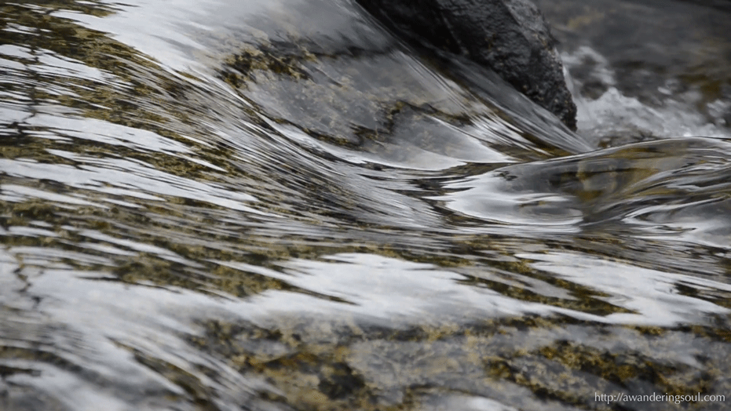

somatic ease

naivety bliss

...(enter stratosphere)...

mischief

spiraltime
a weaving
tension
the erotic hollows
of incompleteness
of incompleteness
plantery phosphene

there are soft children
in each one of us
in each one of us
i want to rest
to create
i want to rest
by creating
i want to create
by resting
to create
i want to rest
by creating
i want to create
by resting
when a dream washes over me
the cold alchemises
every morsel of salt
the cold alchemises
every morsel of salt
about
the womb does not know gender. it only knows the timeless gaps between life and death that we call living. the womb is an effort at living. it incubates potential histories, speculative visions. the womb is a poem, is a mystical friendship, is a metaphorical vessel for keeping our memories safe, to shape our future artitfacts in the now.
the womb survives the border wars, between identities and nation-states. it reunites living with preciousness.